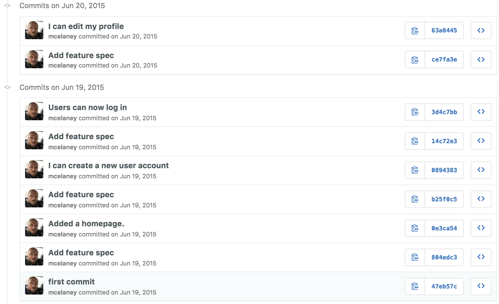

RailsBridge
Workshop for Women
Intro to Version Control and Git
Workshop for Women
Intro to Version Control and Git
Hi I'm Mac!
I write code, eat brunch, and binge TV shows.
@mcelaney
What we will cover today
- What is version control and why should we care?
- Basics of git -- the essential commands
- "Gitting" social with GitHub
What is version control?
...and why should we care?
"The management of changes to documents, computer programs, and other collections of information..."
https://en.wikipedia.org/wiki/Version_control
- why_cats_rule.doc
- why_cats_rule2.doc
- why_cats_rule_v3.doc
- why_cats_rule_final.doc
- why_cats_rule_final-changes.doc
- why_cats_rule_final_final.doc
- why_cats_rule_final_printed.doc
- why_cats_rule_final_final_edits.doc
Save Versions!
Save Versions!
Save Versions!
See differences between versions!
Collaborate with others!
Git
Distributed Source Control
Staging Area

Commit

Commit
Branches

Repository

The commands
git init
Turns a folder in to a local git repository.
git status
Shows us the staged and unstaged changes in our code.
git add filename.txt
Stages changes from a file so that they can be committed.
git commit -m "Add a first file!"
Takes all the staged changes and records them.
git log
Shows a list of all the commits.
git remote add origin git@github.com:mcelaney/railsbridge.git
Adds a remote repository to send code to
git push origin master
Pushes code to a remote repository